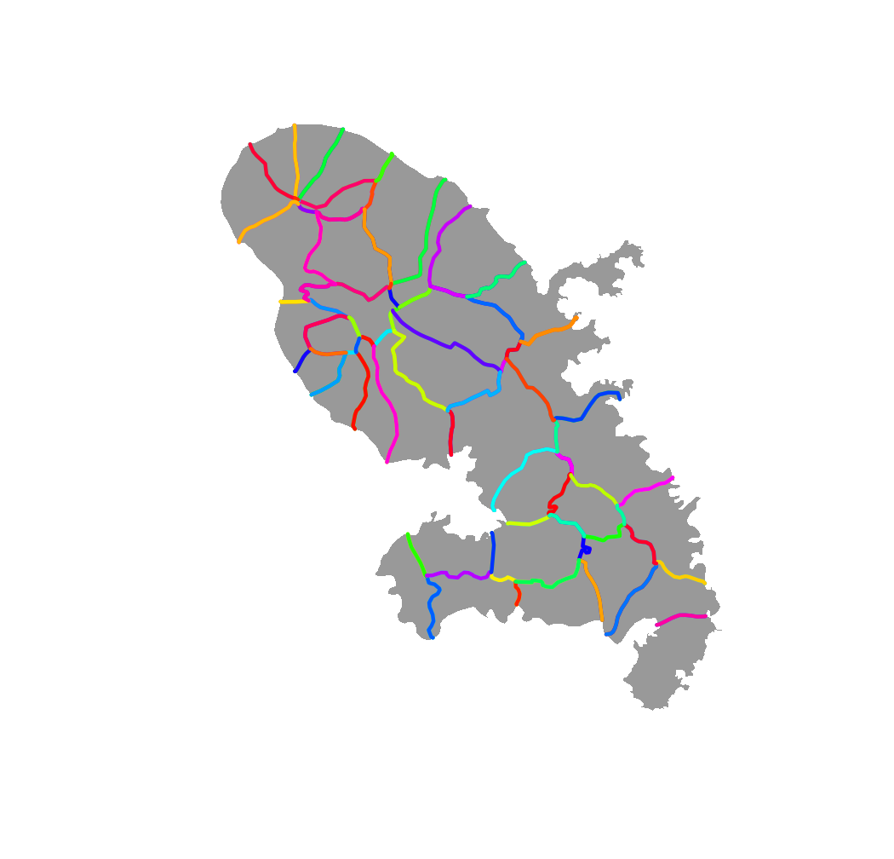
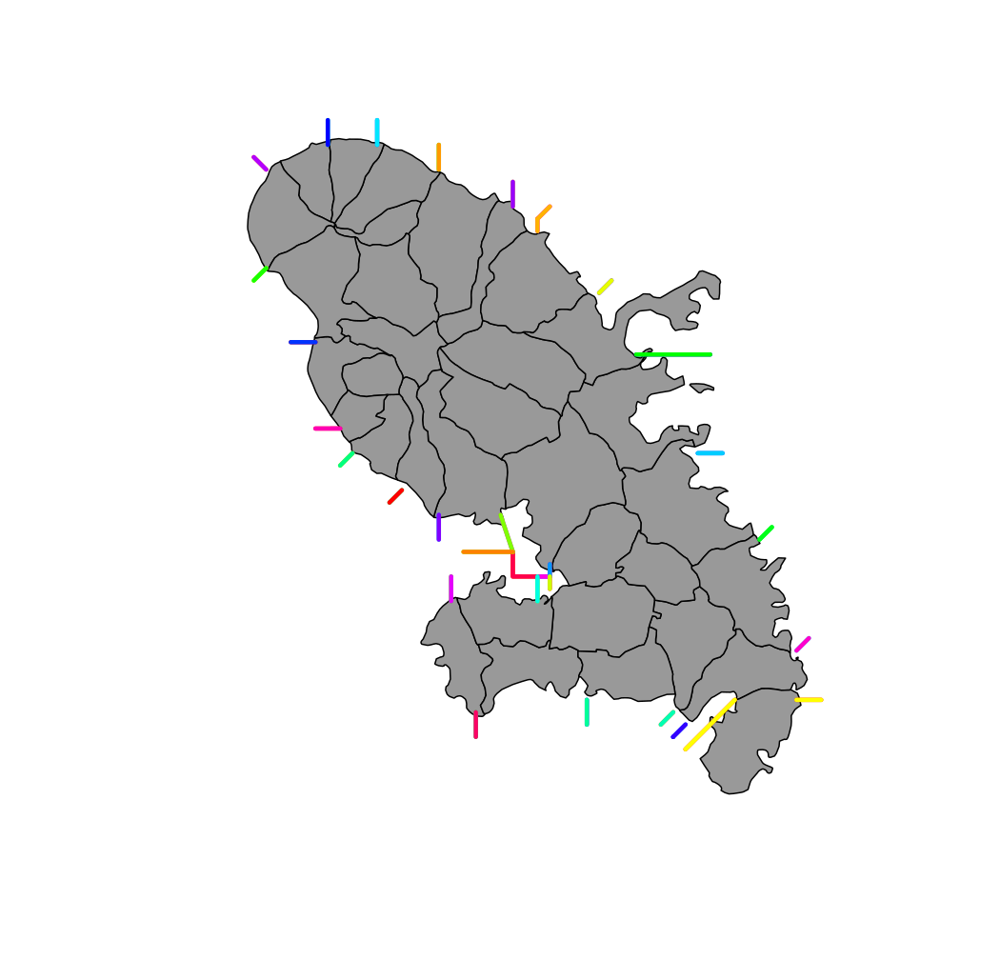

Extract borders between polygons.
Outer borders are non-contiguous polygons borders (e.g. maritime borders).
getBorders(x, id) getOuterBorders(x, id, res = NULL, width = NULL)
| x | an sf object, a simple feature collection or a SpatialPolygonsDataFrame. |
|---|---|
| id | name of the identifier variable in x, default to the first column. (optional) |
| res | resolution of the grid used to compute outer borders (in x units). A high resolution will give more detailed borders. (optional) |
| width | maximum distance between used to compute outer borders (in x units). A higher width will build borders between units that are farther apart. (optional) |
An sf object (MULTILINESTRING) of borders is returned. This object has three id variables: id, id1 and id2. id1 and id2 are ids of units that neighbour a border; id is the concatenation of id1 and id2 (with "_" as separator).
getBorders and getOuterBorders can be combined with rbind.
#> Reading layer `mtq' from data source #> `/tmp/RtmppBiN3A/temp_libpath43d97684eada/cartography/gpkg/mtq.gpkg' #> using driver `GPKG' #> Simple feature collection with 34 features and 7 fields #> Geometry type: MULTIPOLYGON #> Dimension: XY #> Bounding box: xmin: 690574 ymin: 1592536 xmax: 735940.2 ymax: 1645660 #> Projected CRS: WGS 84 / UTM zone 20N# Get borders mtq.borders <- getBorders(x = mtq) # Plot polygons plot(st_geometry(mtq), border = NA, col = "grey60")# Plot borders plot(st_geometry(mtq.borders), col = sample(x = rainbow(nrow(mtq.borders))), lwd = 3, add = TRUE)#> Reading layer `mtq' from data source #> `/tmp/RtmppBiN3A/temp_libpath43d97684eada/cartography/gpkg/mtq.gpkg' #> using driver `GPKG' #> Simple feature collection with 34 features and 7 fields #> Geometry type: MULTIPOLYGON #> Dimension: XY #> Bounding box: xmin: 690574 ymin: 1592536 xmax: 735940.2 ymax: 1645660 #> Projected CRS: WGS 84 / UTM zone 20N# Get units borders mtq.outer <- getOuterBorders(x = mtq, res = 1000, width = 2500) # Plot municipalities plot(st_geometry(mtq), col = "grey60")# Plot borders plot(st_geometry(mtq.outer), col = sample(x = rainbow(nrow(mtq.outer))), lwd = 3, add = TRUE)